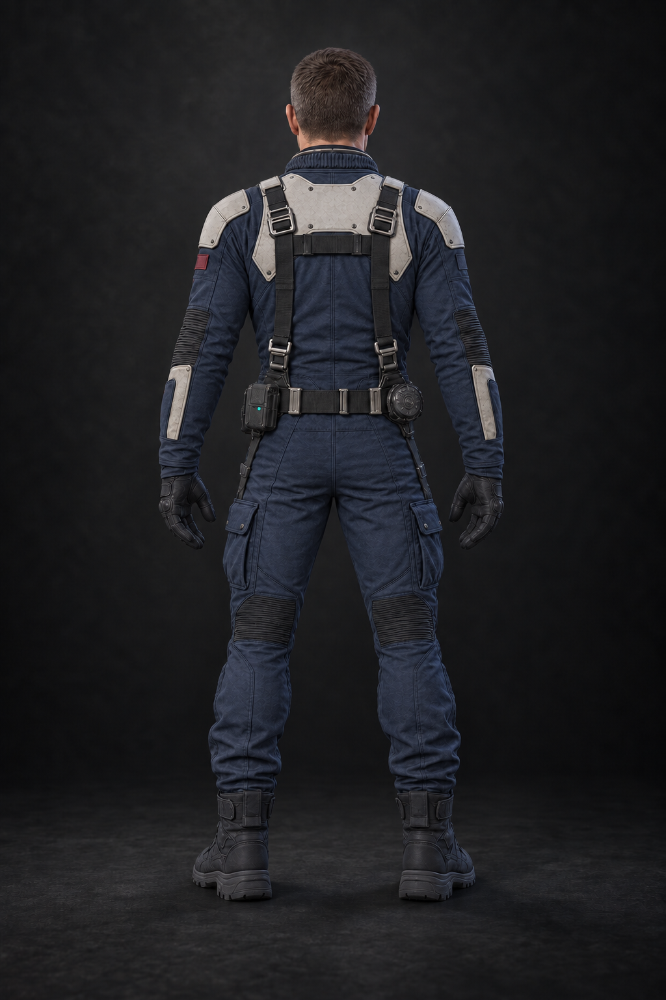
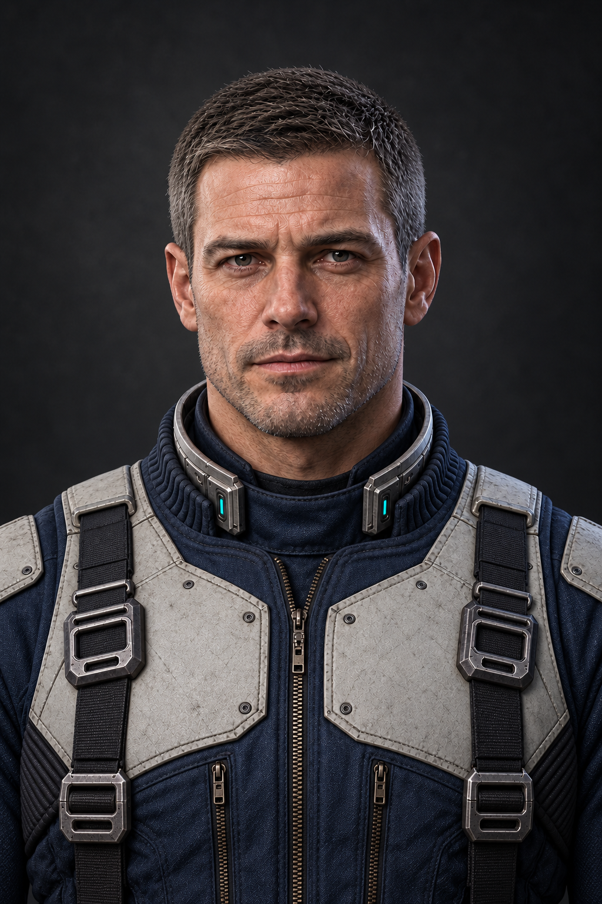
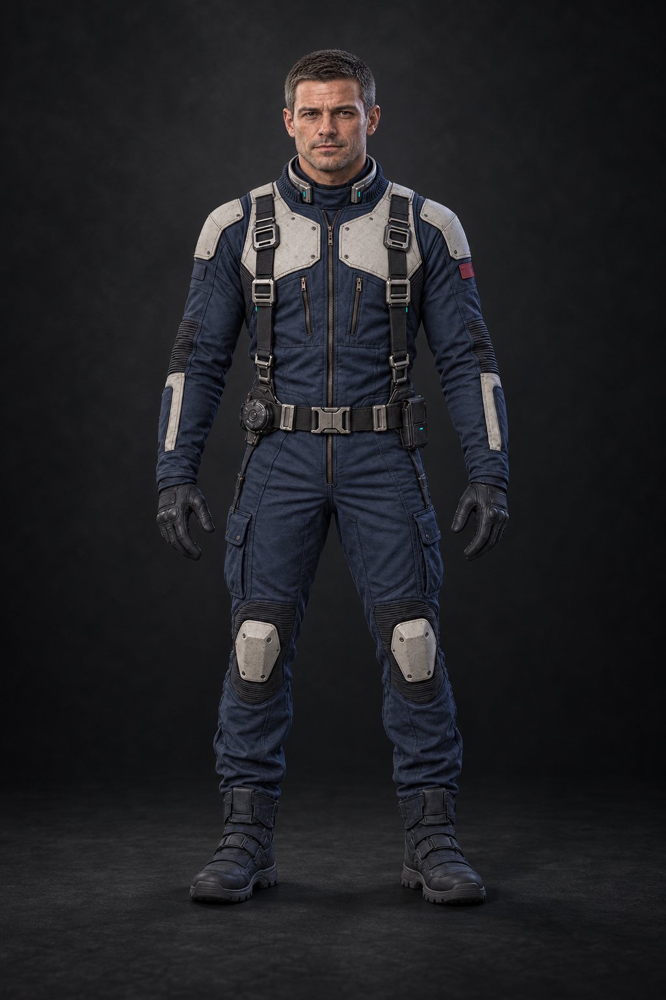
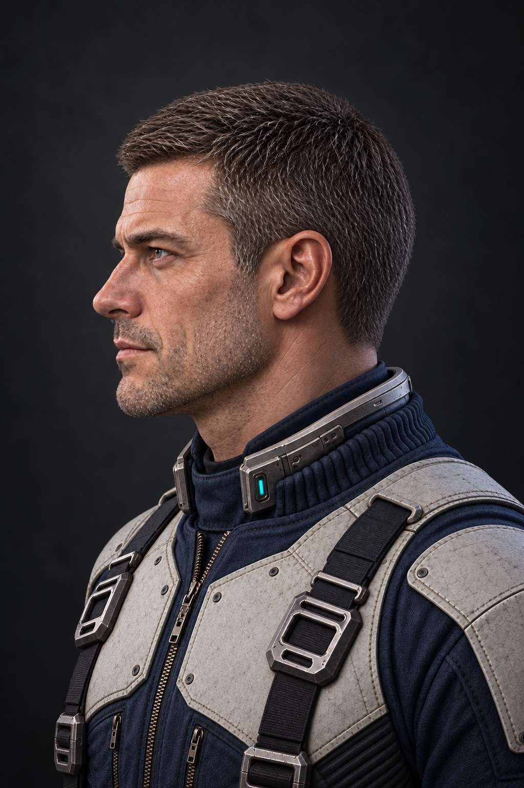
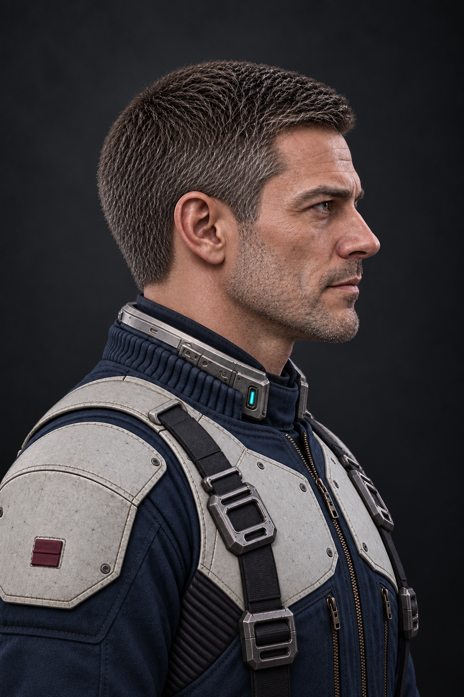
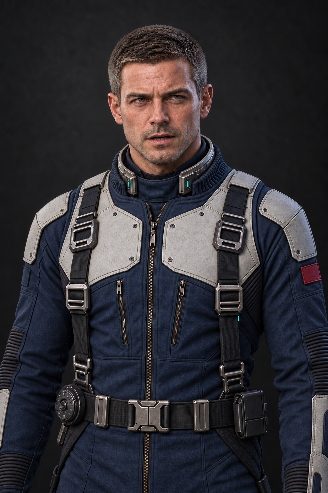

{kind=link}
{kind=link}
{kind=link}
{kind=link}
{kind=link}
{kind=link}
Try not to shoot anything with a flag on it.
CHARACTER BIBLE / Rex
Derek “Rex” Kane
Опытный пилот, который встречает Andygen у Земли. Их соперничество постепенно становится профессиональным доверием: Rex прикрывает конвой и приходит на помощь там, где одного мастерства Andygen уже недостаточно.
Рабочее имя · текущий визуальный набор
Второй ас / напарник и соперник Andygen

Ракурсы и детали
Нажми на изображение, чтобы открыть оригинал целиком.

Скачать оригинальный PNG ↓

Скачать оригинальный PNG ↓

Скачать оригинальный PNG ↓

Скачать оригинальный PNG ↓

Скачать оригинальный PNG ↓
Скачать оригинальный PNG ↓
Состояния образа
Скачать оригинальный PNG ↓

Скачать оригинальный PNG ↓
Образ и характер
Силуэт
35–40 лет, более собранный и военный, чем Andygen. Атлетичный, но без массивности. Короткая стрижка, возможна лёгкая щетина, спокойный уверенный взгляд.
Костюм
Тёмно-синий flight suit, бело-серые панели, минимум декоративных линий, один приглушённый бордовый squad accent. Оснащение чуть старше и утилитарнее, чем у Andygen.
Характер в кадре
Не злой соперник. Он редко улыбается широко и выглядит человеком, которого сложно вывести из равновесия.
Роль в истории
EarthВходит в бой у Земли, помогает пройти оборонительные коридоры и берёт верхнее прикрытие гражданского конвоя.
Jupiter / 5-3Спасает Andygen во время потери управления. Этот поступок сохраняет значение даже при будущих улучшениях корабля игрока.
NeptuneУчаствует в общей ударной группе. Профессиональное соперничество уступает место работе команды.
Реплики из сценария
Существующие английские реплики; новые диалоги здесь не добавлены.
I'll take high cover. Andygen, stay with the convoy.
Материалы для производства
Семь портретов на тёмном графитовом фоне: лицо, оба профиля, полный рост, спина и два поясных состояния.
Это художественные ракурсы одного персонажа. Перед 3D-моделированием швы, пряжки и посадку экипировки нужно свести в единый технический лист.